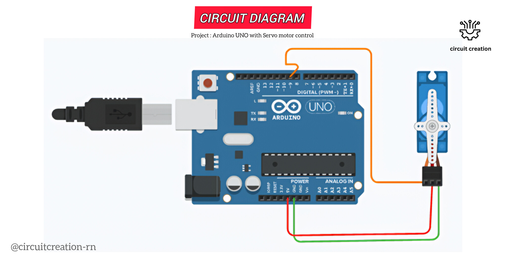

This beginner friendly Arduino project demonstrates how to control an SG90 servo motor using an Arduino UNO without a laptop or PC. The Arduino code is written and uploaded using the Arduinodroid app on an Android phone with an OTG cable.

Connect the red wire of the SG90 servo motor to the 5V pin of the Arduino UNO.
Connect the brown (or black) wire of the servo motor to the GND pin of the Arduino UNO.
Connect the orange (or yellow) signal wire of the servo motor to Digital Pin 9 of the Arduino UNO.
Connect the Arduino UNO to your Android phone using a USB cable and an OTG cable.
Open the Arduinodroid app, paste the servo motor code, compile the code and upload it. The servo motor will rotate automatically.
The SG90 servo motor receives power from the Arduino UNO and is controlled through Digital Pin 9. The Arduino sends PWM control signals to rotate the servo motor to specific angles.
The program is uploaded directly from an Android phone using the Arduinodroid app and an OTG cable, eliminating the need for a laptop or desktop computer.
/*
Arduino UNO Servo Motor Control
Components:
- Arduino UNO
- Servo motor
- Arduino Cable
- OTG Cable
- Jumber wire
- Android phone
- Arduinodroid App
Author: Circuit Creation RN
*/
#include
Servo myServo;
void setup() {
myServo.attach(9);
}
void loop() {
myServo.write(0);
delay(1000);
myServo.write(90);
delay(1000);
myServo.write(180);
delay(1000);
}
The Servo library is included to control the SG90 servo motor. In the setup() function, the servo is attached to Digital Pin 9. Inside the loop() function, the servo rotates to 0°, 90°, and 180°, pausing for one second at each position before repeating continuously.
You can write, compile, and upload Arduino sketches directly from your Android phone using the Arduinodroid app with an OTG cable no laptop or PC required.
Download from Google PlayAfter uploading the program through the Arduinodroid app using an OTG cable, the Arduino UNO continuously controls the SG90 servo motor. The servo rotates smoothly between 0°, 90°, and 180°, demonstrating precise angle control using PWM signals.
Check the wiring, ensure the signal wire is connected to Digital Pin 9, and verify that the code was uploaded successfully.
Yes. You can use the Arduinodroid app and an OTG cable to upload the code directly from your Android phone.
This project uses an SG90 micro servo motor.
{kind=link}